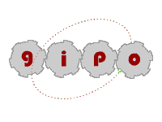

The GIPO Document Set
|
Permission to use, copy, modify, and distribute this software and its documentation for any purpose and without fee is hereby granted, provided that the above copyright notice appear in all copies and that both the copyright notice and this permission notice and warranty disclaimer appear in supporting documentation, and that the names of the authors or their employers not be used in advertising or publicity pertaining to distribution of the software without specific, written prior permission.
The authors and their employers disclaim all warranties with regard to this software, including all implied warranties of merchantability and fitness. In no event shall the authors or their employers be liable for any special, indirect or consequential damages or any damages whatsoever resulting from loss of use, data or profits, whether in an action of contract, negligence or other tortious action, arising out of or in connection with the use or performance of this software.